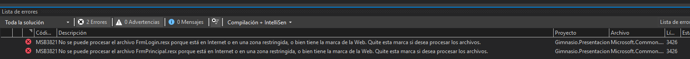
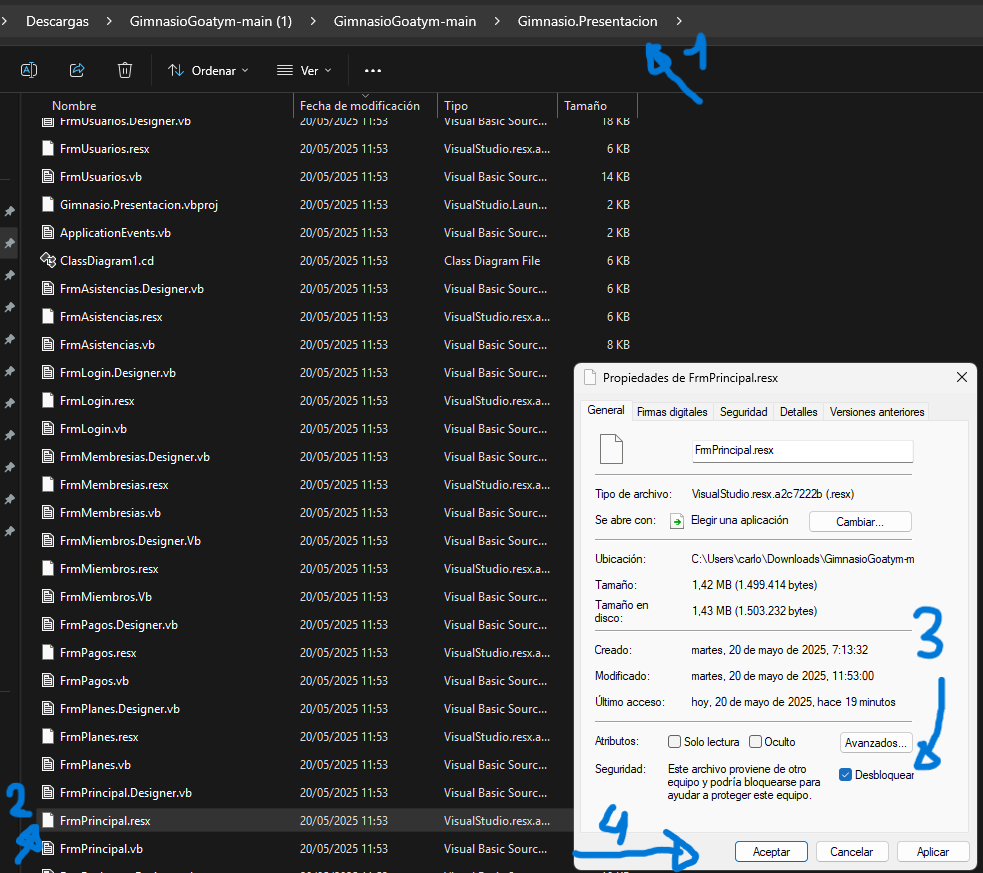
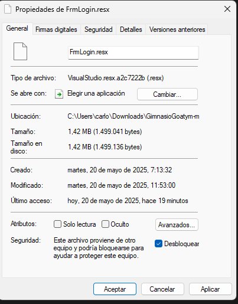

Descargar el archivo zip del proyecto y extraerlo.
La base de datos es goatym.sql y se encuentra en la carpeta\Gimnasio.Datos Tambien se puede descargar en esta misma pagina web en la sección Base de Datos.
Importar goatym.sql a MySql Workbench.
Volviendo a la carpeta raiz del proyecto, abrir gimnasio.sln y se abrira en Visual Studio 2022
Configurar la cadena de conexión de acuerdo a su base de datos, la cadena de conexion se encuentra en Gimnasio.Datos\Conexion.vb
Al compilar el Proyecto, dara el siguiente error:

Para solucionarlo hay que quitar las marcas que pone la Web en los archivos indicados de la siguiente forma:


Luego, ya se podra compilar y ejecutar el proyecto.
Para usar el sistema sin el Visual Studio 2022, luego de compilar el proyecto, se puede usar el archivo Gimnasio.Presentacion.exe que se encuentra en la carpeta Gimnasio.Presentacion/bin/Debug/net9.0-windows
Cuentas de prueba de roles Administrador y Recepcionista.
Usuario: admin
Contraseña: 1234
Usuario: recep
Contraseña: 1234
Para realizar un seguimiento de los errores, existe un registro de errores log.txt que se encuentra en Gimnasio.Presentacion\bin\Debug\net9.0-windows\Logs\log.txt